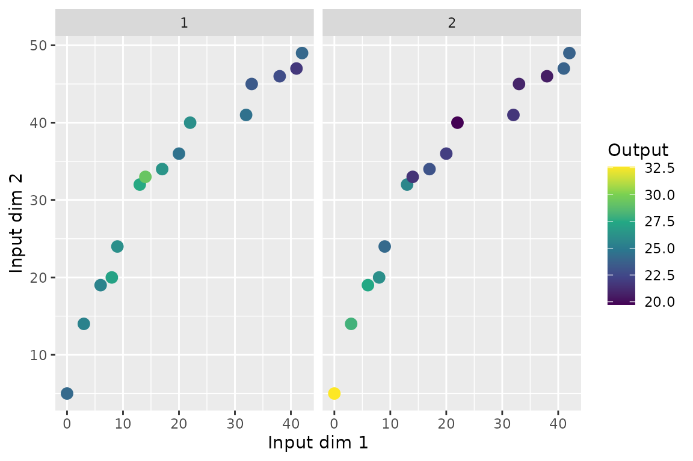
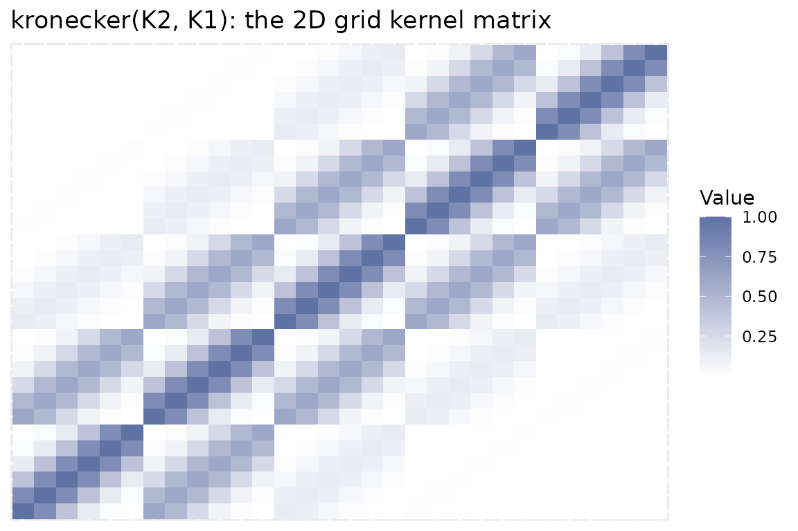

library(keRnel)
library(BayesOmics)
library(ggplot2)Every example so far has one covariate per feature (e.g. genomic
position). When a feature is located by more than one covariate at once
(e.g. position and measurement time), Input is no
longer a single value per (Group, ID, Sample): it becomes
one row per Input_ID, with Output repeated
identically across those rows.
Data layout
set.seed(1)
kern_true <- variance_kernel(variance = 10) * se_kernel(length_scale = 20)
data <- simu_db_kernel(kernel = kern_true, nb_id = 15, nb_group = 2, nb_sample = 10,
nb_dim = 2, diff_group = 0.8, var_sample = 3, range_input = c(0, 50),
integer_input = TRUE)
data[data$ID == "ID_1" & data$Sample == 1, ]
#> ID Group Sample Input_ID Input Output
#> 1 ID_1 1 1 1 0 24.19139
#> 16 ID_1 1 1 2 5 24.19139
#> 301 ID_1 2 1 1 0 32.58991
#> 316 ID_1 2 1 2 5 32.58991One observation of ID_1 is now two rows,
Input_ID = 1 and Input_ID = 2, sharing the
same Output.
wide <- reshape(data[data$Sample == 1, ], idvar = c("ID", "Group"),
timevar = "Input_ID", direction = "wide")
ggplot(wide, aes(Input.1, Input.2, color = Output.1)) +
geom_point(size = 3) +
facet_wrap(~Group) +
scale_color_viridis_c() +
labs(x = "Input dim 1", y = "Input dim 2", color = "Output")
Each feature is now a point in a 2D plane, not a position on a line –
Input.1/Input.2 place it,
Output.1 (identical to Output.2) colors
it.
Why no code change is needed: the kernel factorizes
An isotropic SE kernel’s squared Euclidean distance decomposes as a
sum across dimensions, so the kernel value (its exponential) factorizes
as a product. On a Cartesian grid of positions, that turns the joint 2D
kernel matrix into the Kronecker product of the two per-axis 1D kernel
matrices – this is exactly why
posterior_mean()/fit_kernel() need no
dimension-aware code path, only the extra Input_ID axis in
the data:
axis1 <- seq(0, 50, by = 10)
axis2 <- seq(0, 60, by = 15)
kern1d <- se_kernel(length_scale = 15)
K1 <- evaluate(kern1d, matrix(axis1, ncol = 1), matrix(axis1, ncol = 1))
K2 <- evaluate(kern1d, matrix(axis2, ncol = 1), matrix(axis2, ncol = 1))
K_kron <- kronecker(K2, K1)
mat_df <- as.data.frame(as.table(K_kron))
names(mat_df) <- c("Row", "Col", "Value")
ggplot(mat_df, aes(Row, Col, fill = Value)) +
geom_tile() +
scale_fill_gradient(low = "white", high = "#5E72A4") +
labs(title = "kronecker(K2, K1): the 2D grid kernel matrix", x = NULL, y = NULL) +
theme(axis.text = element_blank(), axis.ticks = element_blank())
Fit and compare – same calls
An isotropic kernel (a single length_scale applied to
the Euclidean distance across both dimensions) needs no code change at
all: only the data has an extra Input_ID axis.
kern <- variance_kernel(variance = 1) * se_kernel(length_scale = 5) +
white_noise_kernel(noise = 1)
g1 <- data[data$Group == unique(data$Group)[1], ]
prior_mean <- mean(g1$Output)
hp_opt <- fit_kernel(kern, g1, prior_mean = prior_mean, prior_cov = 1)
hp_opt
#> variance length_scale noise
#> 8.120222 15.647368 1.216915
#> attr(,"convergence")
#> [1] 0
#> attr(,"value")
#> [1] 325.0137
kern_opt <- kupdate(kern,
variance = hp_opt[["variance"]],
length_scale = hp_opt[["length_scale"]],
noise = hp_opt[["noise"]])
posterior <- posterior_mean(data, kern_opt, mu_0 = prior_mean, lambda_0 = 1)
group_diff(posterior)
#> Metric: per_feature_metric(wasserstein_metric(), power = 0.5)
#>
#> 1 2
#> 1 0.000000 1.271579
#> 2 1.271579 0.000000Recovered length_scale lands in the same ballpark as the
simulated value (20), confirming the kernel is correctly
picking up correlation jointly across both dimensions, not just the
first one.
Takeaways
- Multi-dimensional Input is a data-layout choice
(
Input_ID+ repeatedOutput), not a different function call. - On a grid, the isotropic kernel matrix is exactly a Kronecker product of the per-axis 1D kernel matrices – the mathematical reason no dimension-specific fitting code is needed.
- The starting
length_scalematters more here than in the 1D case – an initial value far from the true scale can stall the optimizer in a flat region; start from a value in the right order of magnitude.